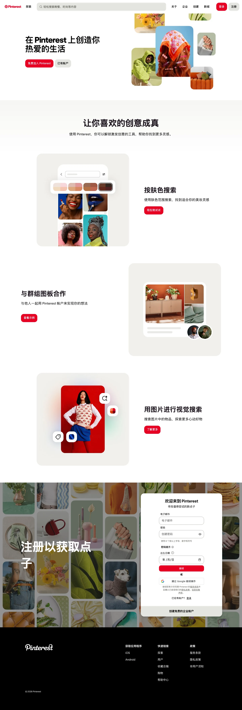

Pinterest 主题
Pinterest 的 Design.md 主题展示，围绕媒体内容、能源运营、消费品牌、电商零售组织页面。
Visual discovery. Red accent, masonry grid, image-first.
媒体内容能源运营消费品牌电商零售品牌展示移动端内容货架趣味互动

来源
- 来源
- getdesign.md
- 镜像
- github:VoltAgent/awesome-design-md
- 网站
- https://pinterest.com/
- 详情
- https://getdesign.md/pinterest/design-md
色板
#262622: #262622#e60023: #e60023#000000: #000000#ffffff: #ffffff#cc001f: #cc001f#211922: #211922#33332e: #33332e#62625b: #62625b#91918c: #91918c#c8c8c1: #c8c8c1#dadad3: #dadad3#e5e5e0: #e5e5e0
字体
display: Pin Sansbody: Pin Sansmono: ui-monospacehints: Pin Sans,ui-monospace,Inter,Manrope,Roboto
圆角
control: 16pxcard: 16pxpreview: 32pxpill: 9999pxsource: design-md
间距
xxs: 4pxxs: 6pxsm: 8pxmd: 12pxlg: 16pxxl: 24pxxxl: 32pxsection: 64pxsource: design-md
使用建议
建议
- 建议：Reserve {colors.primary} (Pinterest Red) for primary CTAs, the active-tab indicator, and the brand wordmark only. It is never decorative。
- 建议：Use {rounded.md} (16px) on every interactive element and standard card; reserve {rounded.lg} (32px) for large pin cards and modals; reserve {rounded.full} for circular elements (search bar, chips, avatars)。
- 建议：Stage every pin image inside a {component.pin-card} with no internal padding — the photograph IS the card。
- 建议：Stack content sections at {spacing.section} (64px) rhythm; tighten pin grids to {spacing.sm} (8px) gutters so imagery effectively touches。
- 建议：Use {component.pin-overlay-pill} to anchor a search-term tag in the corner of a category-tile pin photograph — the system's signature decorative gesture。
避免
- 避免：use sharp-cornered buttons or cards. There are no {rounded.none} interactive elements in the system。
- 避免：introduce drop shadows on cards. The only shadow in the system is the 16px ambient under {component.modal-card}。
- 避免：pad {component.pin-card} internally. The image is full-bleed; metadata sits over the image as an overlay pill, not below it。
- 避免：replace {colors.primary} with another red. The brand red is precise — {#e60023}。
- 避免：use {colors.ink-soft} (the body-prose link tint) outside of inline body anchor links. It is not a chrome color。
查看 DESIGN.md